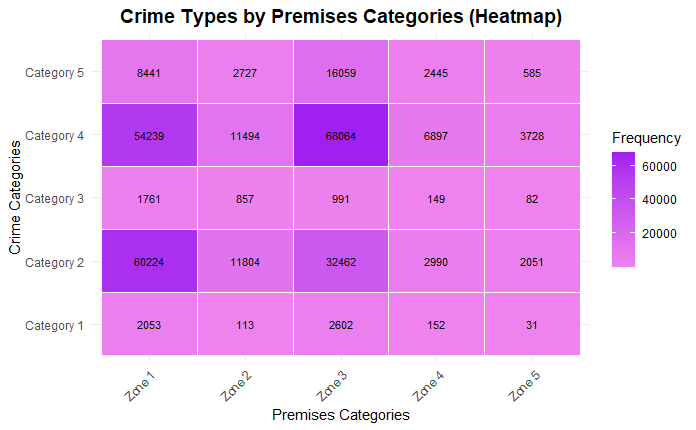

Methodology and Visualizations
I Dataset.
The dataset that we selected is called “crime data from 2020 to present”. It provides detailed information on reported crime incidents within the City of Los Angeles since 2020. This dataset is a valuable resource for understanding crime trends, geographic distribution, and incident specifics, and it is regularly updated to ensure current data availability. It has variables such as area, area name, victim age, victim sex, type of crime committed, etc. Out of those we have categorical variables like crime, crime type, victim related information (demographics), numerical data such as geographic coordinates, incident counts and identifiers, and many more. The total number of rows is 986873 and the number of columns is 28, after cleaning we get 304200 rows and 18 columns. This dataset is primarily aimed at public access and research, enabling analysts, policymakers, and the community to study crime patterns and develop data-driven strategies for crime reduction. It is freely available for download on the U.S. government’s open data portal, data.gov, and is maintained by the Los Angeles city authorities. It aligns with efforts to promote transparency and accountability through open data initiatives.
Data Cleaning:
The data cleaning process was initiated with an inspection of the dataset to understand its structure and quality. Key functions such as head(), summary(), nrow(), and ncol() were used to explore the dataset and assess its dimensions and attributes. Column names were retrieved to identify unnecessary or irrelevant fields for removal.
Subsequently, a series of irrelevant columns, including DR_NO, AREA, TIME.OCC, Part.1.2, Mocodes, Status, Crm.Cd.2, Crm.Cd.3, Crm.Cd.4, and Cross.Street, were excluded from the dataset. These columns were deemed redundant or unrelated to the intended analysis. The dataset was further refined by handling missing values, ensuring completeness. Rows with missing values were identified and removed using the na.omit() function to maintain analytical integrity.
To address redundancy, duplicate rows were identified and eliminated using the distinct() function. Date fields, such as Date.Rptd and DATE.OCC, were standardized using a custom convert_dates function. This conversion ensured uniformity in date formats, critical for subsequent analysis. Additional validation confirmed the successful transformation of these date columns.
Invalid data entries were also addressed. Negative values in the Vict.Age column, which were logically incorrect, were replaced with NA. Similarly, zero values in the LAT and LON columns, indicative of invalid geographical coordinates, were also replaced with NA.
Finally, the cleaned dataset was saved as Cleaned_Crime_Data.csv, ensuring it is ready for further analysis. This cleaning process has improved the dataset’s quality, consistency, and relevance, enabling a robust foundation for meaningful analysis and insights.
II Methodology.
After data cleaning, we analyzed and visualized to explore and learn more about the dataset. In the start we performed summary statistics on the cleaned data.
Fig 1. Displays a summary of a crime dataset consisting of 304200 records and 18 attributes. Key columns include Date.Rptd and Date.OCC, both recorded as character types, indicating the reporting and occurrence dates of crimes. Geographical information includes LAT and LON for latitude and longitude, with ranges suggesting broad geographical coverage. Vict.Sex, Vict.Descent, and Vict.Age capture victim demographics. Crime characteristics are detailed by columns such as Cr,.Cd (which is numeric) and Crm.Cd.Desc ( which is descriptive), with associated variables like Premis.Cd and Weapon.Used.Cd, indicating the premise type and weapon usage. The dataset includes additional descriptors like Status.Desc and AREA.NAME.

Fig 2
Then to see which area has more amount of crimes we calculated that. (see Fig 2)
Fig 3
The scatter plot(Fig 3) visualizes the relationship between victim age, gender and the total number of crimes. The data includes realistic victim ages and is categorized by sex. Key observations show that the highest crime counts occur in victims aged 20-35, with males being the most frequently victimized group, followed by females. The trend decreases steadily beyond 35 years, with very few crimes involving victims older than 75. The category “X- non binary” has consistently low crime counts across all ages, suggesting it may represent an unspecified or less common gender classification. The distribution highlights the significant vulnerability of younger adults, particularly males, to criminal activities and the importance of targeted interventions for this demographic.
Fig 4
Fig 4 Shows the frequency distribution of crimes across different premise types. Crimes occurring on streets account for the largest proportion, indicating that public spaces represent a significant area of concern for criminal activity. Single-family dwellings and multi-unit dwellings show high crime rates, suggesting residential areas are vulnerable. Sidewalks represent another significant category. In contrast, crimes reported in locations such as alleys, parking lots and parks/play grounds constitute a considerably smaller percentage of total crimes.
FIg 5
The above diagram displays the frequency distribution (Fig 5.) distribution of victim ages for five crime categories: Assault with Deadly Weapon/Aggravated Assault, Battery-simple Assault, Criminal Threats – no weapon displayed, intimate partner simple assault, and robbery. The distribution of victim ages shows that individuals aged 15-35 experience the highest frequency of victimization across all crime types. Battery/ simple assault is the most prevalent, even more so among young adults.
Victimization sharply declines after the age of 35, with very few victims over 60. Crimes involving adolescents begin to rise after age 10, peaking in young adulthood. These trends highlight the need for targeted crime prevention measures for younger demographics.
RESEARCH QUESTIONS:
Research Question 1:
What is the relationship between crime types and premises categories, and how are specific crime types distributed across different premises?

Fig 6
Why This Question?
Understanding the relationship between crime types and premises can provide critical insights into which types of crimes are more prevalent in specific locations. This helps law enforcement and policymakers focus on high-risk areas and develop targeted prevention strategies.
Methods: We used chi-square test and heat map to answer this question. Our findings demonstrates a significant relationship between crime types and premises categories (X² = 16,369, df = 16, p-value < 2.2e-16). The heatmap further illustrates concentrated patterns, suggesting that specific premises types are more vulnerable to particular crimes. These findings underscore the importance of implementing targeted crime prevention strategies in high-risk areas.
Why this method: The Pearson’s Chi- squared test was chosen as the most appropriate statistical method for this analysis because the research question examines the relationship between two categorical variables: crime type and premises categories. This test is specifically designed to determine whether there is a significant association between such variables by comparing observed frequencies with expected frequencies. Other tests such as t-test or ANOVA, are not suitable because they require continuous dependent variables. Similarly, correlation tests, like Pearson or Spearman are designed for continuous or ordinal variables making them unsuitable here. While we could use logistic regression to explore categorical relationships, it would add unnecessary complexity. Chi-sq test has a non-parametric nature, is flexible in handling multiple categories and is straightforward thus it is the ideal choice for answering the research question and identifying the patterns in the dataset.
Research Question 2:
How does the age distribution of victims differ between severe and non-severe crimes?
Fig 7
Why This Question?
Exploring the age distribution of victims for severe and non-severe crimes is essential to identify which age groups are more vulnerable to severe crimes. This information can guide intervention programs and resource allocation.
Methods: We used Welch Two-Sample test and box plot. The data includes 248,394 cases of non-sever crimes and 55,806 cases of server crimes. A welch two-sample t-test was conducted to compare the mean victim age between these two categories. The results of the t-test were statistically significant (t = 22.029, df = 89,340, p < 2.2e-16), indicating a significant difference in the mean ages of victims between sever and non-sever crimes. The results suggest that victims of severe crimes are, on average, slightly older than victims of non- severe crimes. While the difference in mean age is statistically significant, the magnitude of the difference is relatively small, which suggests that age may not be the primary factor influencing severity. However, the broader age distribution observed for sever crimes, as visualized (see Fig 7.) indicates greater variability in victim age for these cases.
Why this method:
The t-test was chosen for this analysis because it is well-suited for comparing the means of two independent groups with unequal sample sizes and potentially unequal variances. Since there was a large difference in the sample sizes, this test provided a robust and reliable comparison of mean victim ages with requiring the assumption of equal variances. Additionally, this test directly addresses the research question, focusing on mean differences, and offers interpretable results. Alternative methods, such as non-parametric tests or regression analysis, would be less appropriate as they either do not compare means directly or they go beyond the scope of this specific question.
Research Question 3:
Does the relationship between victim age and total crimes vary by victim sex?
Fig 8
First step was to filter and aggregate crime data based on the victim’s sex and age as seen in Fig 8.
The bar chart (Fig 9.) visualizes the distribution of total crime counts by victim sex, expressed as percentages of the total. The data reveals that females victims account for 48.36% of the total crime counts, while male victims make up 51.04%. This shows relatively balanced distribution of crime victims by sex.
Why this: This research question is a good choice because it addresses critical aspects of victim demographics—age and gender—that are essential for understanding patterns of victimization. By exploring the relationship between victim age and total crime counts across genders, the analysis provides valuable insights into which populations are most vulnerable to criminal activities. These findings can help inform targeted prevention strategies, policy-making, and resource allocation to address the specific needs of high-risk groups, such as younger males and females.
Methods: We applied regression analysis to evaluate the relationship between total crimes and victim age for males and females. For both the models, the age of the victim is negatively associated with the total number of crimes, indicating that younger victims tend to be involved in more crimes, while older victims are associated with fewer crimes. Specifically, for male victims, each additional year of age is associated with a decrease of approximately 20.6 crimes, while for females the decrease is slightly higher at 24.9 per year. These relationships are statistically significant in both models, with extremely low p-values, suggesting strong evidence against the null hypothesis.
The model for female victims show a stronger relationship, with an R-squared value of 0.2665, compared to 0.1982 for the male model. This suggests that victim age explains a larger portion of the variation in crime totals for female victims than for male victims. The residual standard errors are similar for both models (1186 for males and 1178 for females), indicating similar level of prediction accuracy. Despite the relatively low R-sqed values, which suggest that other factors may influence crime totals beyond age, both models are statistically significant, and victims age is an important predictor of crime involvement for both genders.
Why not another method: We chose a combination of descriptive (bar chart) and regression analysis to answer this research question because these methods effectively capture both the overall trends and the quantifiable relationship between victim age, gender, and crime counts. Other methods such as t-test or ANOVA, focus on group comparisons and would not capture the continuous relationship between age and crime counts. We did not use machine learning as it prioritizes prediction over interpretability. This was the most suitable choice as it provides clear, statistically significant results that align with the research focus on understanding the relationship rather than making predictio